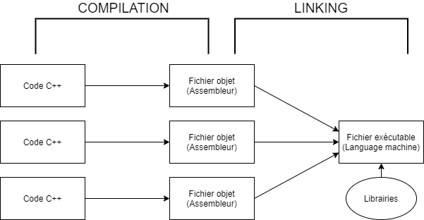

Introduction au C++
Chapitre 2 - Bonjour, Monde!
Un premier code
#include ‹iostream›
using namespace std;
int main()
{
cout << "Hello, World!" << endl;
return 0;
}
Hello, World !
int main()
{
...
return 0;
}
Ce code définit une fonction appelée main qui renvoie un nombre entier (int). À l'exécution d'un programme, la fonction main est toujours automatiquement executé en premier !
L'instruction return arrête la fonction et définit le résultat de la fonction. Ici, c'est le nombre entier 0.
cout << "Hello, World!" << endl;
cout pour "Console output" permet d'écrire dans la console. endl pour "End line" est un saut de ligne. Ainsi, le code ci-dessus permet d'afficher "Hello, World!" et de faire un saut de ligne.
#include ‹iostream›
using namespace std;
Sans ces deux instructions, on ne pourrait pas utiliser cout et endl. C'est l'équivalent du import en Python.
L'ordinateur
On écrit un programme en C++... et magie ! L'ordinateur fait exactement ce qu'on lui demande. Mais comment ça fonctionne ?
Le micro-processeur

- Il sait exéctuer une suite ordonnée d'instructions
- Il dialogue avec le monde extérieur via de la mémoire
- Cette mémoire contient, sous forme de nombres, les instructions à exécuter (addition, multiplication, comparaison, etc...)
Code C++
int c = 3 * a + 2 * b;Code Machine
|
Pour nous les humains L'assembleur |
Pour la machine Le language machine |
|
|
La mémoire
- Décomposé en octets. Un octect correspond à un nombre binaire de 8 bits. Ainsi, un octect peut contenir un nombre entre $0$ et $2^8=256$ exclus.
- Pour se repérer dans la mémoire, on numérote les octets, et on obtient ainsi des Adresses mémoire.
La mémoire
- Contient les instructions des programmes
- Contient le contenu des variables de chaque programmes
La production du fichier exécutable
C++ vs Python
| C++ | Python |
|
Languages compilés
Le programme est traduit en code machine. Ainsi, le processeur lis directement notre programme. |
Languages interpétés
C'est un programme (généralement écrit en C++) qui vas interpreter le programme, et donne les instructions au processeur |
Languges compilés

Source : http://www.france-ioi.org/algo/course.php?idChapter=561&idCourse=2368
Languges interpétés

Source : http://www.france-ioi.org/algo/course.php?idChapter=561&idCourse=2368
Environnement de programmation
| Windows | Linux / Mac | |
| Fichier source C++ |
.cpp
|
.cpp
|
| Fichier objet |
.obj
|
.o
|
| Exécutable |
.exe
|
(rien)
|
Le debuggeur
Permet de suivre le déroulement d'un programme instruction par instruction, et d'afficher à la demande la valeur des variables.